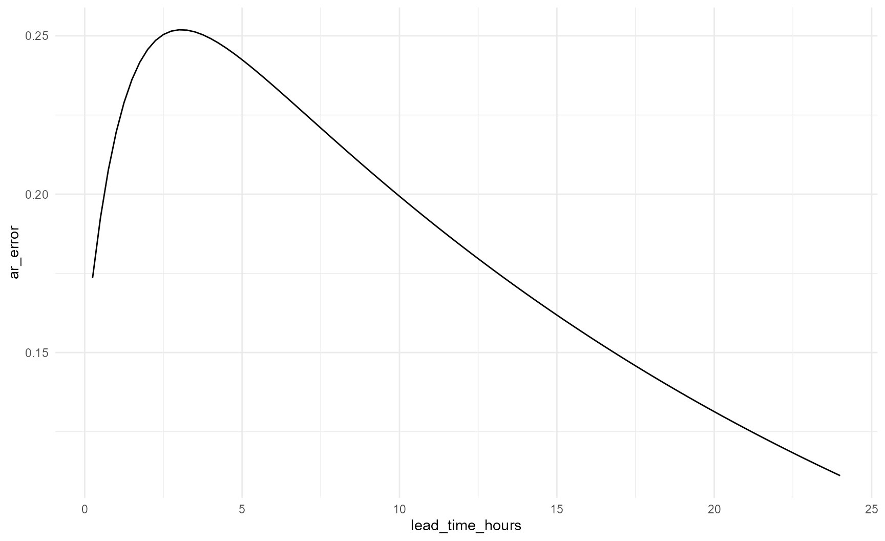
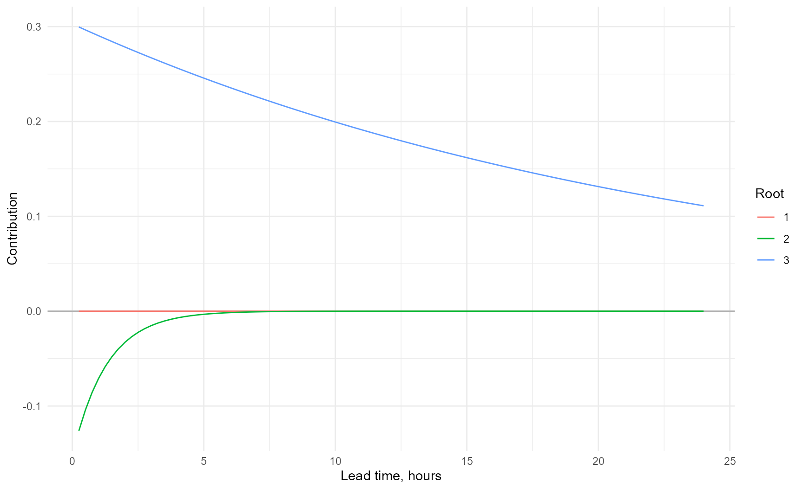
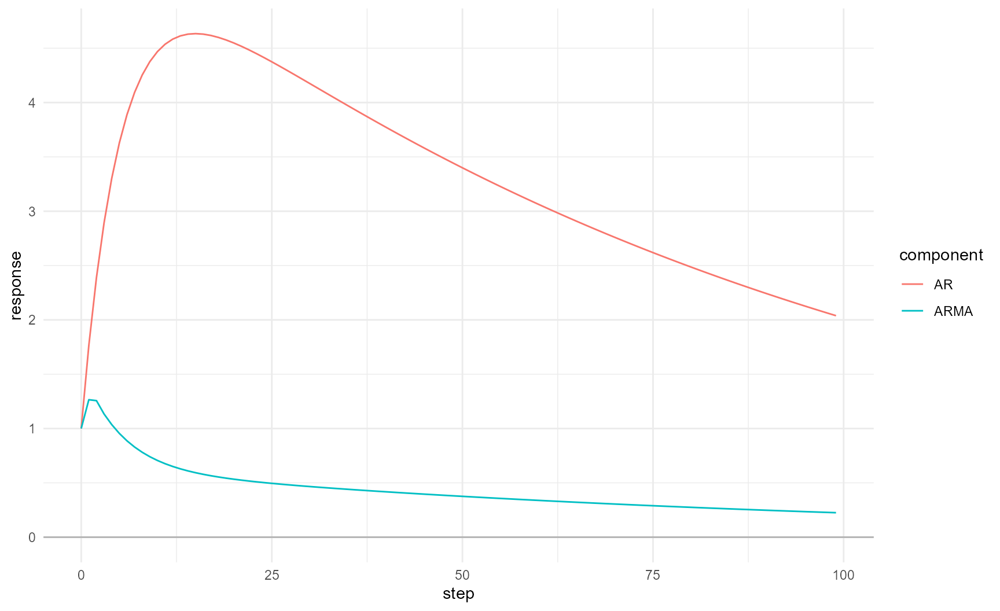

Purpose
This vignette provides a complete practical workflow.
reach.io should import and standardise source data.
reach.rate should apply any required level-flow conversion.
reach.postproc starts from prepared series in the same
domain and units.
Construct parameters
parameters <- default_ar_parameters()
parameters@coefficients
#> a_1 a_2 a_3
#> 1.765000 -0.726250 -0.040656Explicit Deltares parameters:
deltares <- ar_parameters(
coefficients = c(
a_1 = 1.765,
a_2 = -0.72625,
a_3 = -0.040656
),
sign_convention = "Deltares",
label = "2024 defaults"
)Equivalent standard signed-equation parameters:
standard <- ar_parameters(
coefficients = c(
phi_1 = -1.765,
phi_2 = 0.72625,
phi_3 = 0.040656
),
sign_convention = "Standard"
)
all.equal(deltares@coefficients, standard@coefficients)
#> [1] TRUEInspect and assess roots
root_information <- roots(parameters, time_step_minutes = 15)
root_table(root_information)
#> root_id root_real root_imaginary root_modulus lag_root_real
#> <int> <num> <num> <num> <num>
#> 1: 3 0.98961490 1.100114e-24 0.98961490 1.010494
#> 2: 2 0.82517187 -1.306909e-24 0.82517187 1.211869
#> 3: 1 -0.04978678 2.067952e-25 0.04978678 -20.085655
#> lag_root_imaginary lag_root_modulus raw_decay_time_steps decay_time_steps
#> <num> <num> <num> <num>
#> 1: -1.123324e-24 1.010494 95.7909755 95.7909755
#> 2: 1.919360e-24 1.211869 5.2038996 5.2038996
#> 3: -8.342810e-23 20.085655 0.3333327 0.3333327
#> effective_decay_time_steps decay_time_hours effective_decay_time_hours
#> <num> <num> <num>
#> 1: 95.7909755 23.94774387 23.9477439
#> 2: 5.2038996 1.30097489 1.3009749
#> 3: 0.2338708 0.08333317 0.0584677
#> oscillation_period_steps oscillation_period_hours is_growing is_persistent
#> <num> <num> <lgcl> <lgcl>
#> 1: Inf Inf FALSE FALSE
#> 2: Inf Inf FALSE FALSE
#> 3: 2 0.5 FALSE FALSE
#> is_oscillating modal_stability lag_stability display_order
#> <lgcl> <fctr> <fctr> <int>
#> 1: FALSE Stable Stable 1
#> 2: FALSE Stable Stable 2
#> 3: TRUE Stable Stable 3
plot_ar(root_information, root_definition = "modal")
assessment <- assess(parameters)
assessment@summary
#> [1] "Pass. All roots meet the accepted criteria."
assessment_table(assessment)
#> test_id test failed affected_roots
#> <char> <char> <lgcl> <list>
#> 1: order Permitted AR order FALSE
#> 2: a Exponential growth FALSE
#> 3: b Excessive decay time FALSE
#> 4: c All roots decay too quickly FALSE
#> 5: d Unacceptable oscillation FALSE
#> criterion
#> <char>
#> 1: permitted order
#> 2: no growing root
#> 3: maximum decay
#> 4: minimum useful decay
#> 5: oscillation ratioDo not continue to operational evaluation with parameters that fail, unless the departure from the default criteria is documented and justified for the site.
Forecast one error series
Initial errors are newest first.
error_forecast <- forecast_ar(
parameters,
initial_errors = c(0.15, 0.12, 0.10),
steps = 96L,
time_step_minutes = 15
)
forecast_series(error_forecast)
#> step lead_time_minutes lead_time_hours ar_error
#> <int> <num> <num> <num>
#> 1: 1 15 0.25 0.1735344
#> 2: 2 30 0.50 0.1924720
#> 3: 3 45 0.75 0.2075853
#> 4: 4 60 1.00 0.2195501
#> 5: 5 75 1.25 0.2289219
#> 6: 6 90 1.50 0.2361593
#> 7: 7 105 1.75 0.2416407
#> 8: 8 120 2.00 0.2456780
#> 9: 9 135 2.25 0.2485289
#> 10: 10 150 2.50 0.2504056
#> 11: 11 165 2.75 0.2514836
#> 12: 12 180 3.00 0.2519072
#> 13: 13 195 3.25 0.2517958
#> 14: 14 210 3.50 0.2512477
#> 15: 15 225 3.75 0.2503439
#> 16: 16 240 4.00 0.2491514
#> 17: 17 255 4.25 0.2477252
#> 18: 18 270 4.50 0.2461108
#> 19: 19 285 4.75 0.2443456
#> 20: 20 300 5.00 0.2424605
#> 21: 21 315 5.25 0.2404809
#> 22: 22 330 5.50 0.2384278
#> 23: 23 345 5.75 0.2363183
#> 24: 24 360 6.00 0.2341666
#> 25: 25 375 6.25 0.2319844
#> 26: 26 390 6.50 0.2297812
#> 27: 27 405 6.75 0.2275649
#> 28: 28 420 7.00 0.2253418
#> 29: 29 435 7.25 0.2231174
#> 30: 30 450 7.50 0.2208958
#> 31: 31 465 7.75 0.2186806
#> 32: 32 480 8.00 0.2164746
#> 33: 33 495 8.25 0.2142801
#> 34: 34 510 8.50 0.2120991
#> 35: 35 525 8.75 0.2099330
#> 36: 36 540 9.00 0.2077829
#> 37: 37 555 9.25 0.2056500
#> 38: 38 570 9.50 0.2035348
#> 39: 39 585 9.75 0.2014380
#> 40: 40 600 10.00 0.1993600
#> 41: 41 615 10.25 0.1973012
#> 42: 42 630 10.50 0.1952617
#> 43: 43 645 10.75 0.1932418
#> 44: 44 660 11.00 0.1912414
#> 45: 45 675 11.25 0.1892607
#> 46: 46 690 11.50 0.1872996
#> 47: 47 705 11.75 0.1853581
#> 48: 48 720 12.00 0.1834362
#> 49: 49 735 12.25 0.1815337
#> 50: 50 750 12.50 0.1796505
#> 51: 51 765 12.75 0.1777865
#> 52: 52 780 13.00 0.1759415
#> 53: 53 795 13.25 0.1741155
#> 54: 54 810 13.50 0.1723082
#> 55: 55 825 13.75 0.1705196
#> 56: 56 840 14.00 0.1687494
#> 57: 57 855 14.25 0.1669974
#> 58: 58 870 14.50 0.1652636
#> 59: 59 885 14.75 0.1635477
#> 60: 60 900 15.00 0.1618495
#> 61: 61 915 15.25 0.1601689
#> 62: 62 930 15.50 0.1585058
#> 63: 63 945 15.75 0.1568598
#> 64: 64 960 16.00 0.1552310
#> 65: 65 975 16.25 0.1536190
#> 66: 66 990 16.50 0.1520237
#> 67: 67 1005 16.75 0.1504450
#> 68: 68 1020 17.00 0.1488827
#> 69: 69 1035 17.25 0.1473366
#> 70: 70 1050 17.50 0.1458066
#> 71: 71 1065 17.75 0.1442924
#> 72: 72 1080 18.00 0.1427939
#> 73: 73 1095 18.25 0.1413110
#> 74: 74 1110 18.50 0.1398435
#> 75: 75 1125 18.75 0.1383912
#> 76: 76 1140 19.00 0.1369540
#> 77: 77 1155 19.25 0.1355318
#> 78: 78 1170 19.50 0.1341243
#> 79: 79 1185 19.75 0.1327314
#> 80: 80 1200 20.00 0.1313530
#> 81: 81 1215 20.25 0.1299889
#> 82: 82 1230 20.50 0.1286389
#> 83: 83 1245 20.75 0.1273030
#> 84: 84 1260 21.00 0.1259809
#> 85: 85 1275 21.25 0.1246726
#> 86: 86 1290 21.50 0.1233779
#> 87: 87 1305 21.75 0.1220966
#> 88: 88 1320 22.00 0.1208286
#> 89: 89 1335 22.25 0.1195738
#> 90: 90 1350 22.50 0.1183320
#> 91: 91 1365 22.75 0.1171031
#> 92: 92 1380 23.00 0.1158870
#> 93: 93 1395 23.25 0.1146835
#> 94: 94 1410 23.50 0.1134925
#> 95: 95 1425 23.75 0.1123139
#> 96: 96 1440 24.00 0.1111475
#> step lead_time_minutes lead_time_hours ar_error
#> <int> <num> <num> <num>
plot_ar(error_forecast)
Apply the errors to a simulated series:
simulated <- 0.8 + 1.2 * exp(
-((forecast_series(error_forecast)$lead_time_hours - 12) / 4)^2
)
updated <- apply_ar_update(
simulated = simulated,
ar_error = forecast_series(error_forecast)$ar_error,
lower_limit = 0,
time = forecast_series(error_forecast)$lead_time_hours
)
updated
#> time simulated ar_error updated_unconstrained updated was_limited
#> <num> <num> <num> <num> <num> <lgcl>
#> 1: 0.25 0.8002146 0.1735344 0.9737490 0.9737490 FALSE
#> 2: 0.50 0.8003086 0.1924720 0.9927806 0.9927806 FALSE
#> 3: 0.75 0.8004404 0.2075853 1.0080257 1.0080257 FALSE
#> 4: 1.00 0.8006235 0.2195501 1.0201736 1.0201736 FALSE
#> 5: 1.25 0.8008758 0.2289219 1.0297977 1.0297977 FALSE
#> 6: 1.50 0.8012207 0.2361593 1.0373801 1.0373801 FALSE
#> 7: 1.75 0.8016882 0.2416407 1.0433289 1.0433289 FALSE
#> 8: 2.00 0.8023165 0.2456780 1.0479946 1.0479946 FALSE
#> 9: 2.25 0.8031540 0.2485289 1.0516829 1.0516829 FALSE
#> 10: 2.50 0.8042608 0.2504056 1.0546664 1.0546664 FALSE
#> 11: 2.75 0.8057112 0.2514836 1.0571947 1.0571947 FALSE
#> 12: 3.00 0.8075957 0.2519072 1.0595029 1.0595029 FALSE
#> 13: 3.25 0.8100234 0.2517958 1.0618192 1.0618192 FALSE
#> 14: 3.50 0.8131241 0.2512477 1.0643718 1.0643718 FALSE
#> 15: 3.75 0.8170503 0.2503439 1.0673943 1.0673943 FALSE
#> 16: 4.00 0.8219788 0.2491514 1.0711301 1.0711301 FALSE
#> 17: 4.25 0.8281113 0.2477252 1.0758364 1.0758364 FALSE
#> 18: 4.50 0.8356751 0.2461108 1.0817858 1.0817858 FALSE
#> 19: 4.75 0.8449217 0.2443456 1.0892673 1.0892673 FALSE
#> 20: 5.00 0.8561247 0.2424605 1.0985853 1.0985853 FALSE
#> 21: 5.25 0.8695761 0.2404809 1.1100570 1.1100570 FALSE
#> 22: 5.50 0.8855800 0.2384278 1.1240078 1.1240078 FALSE
#> 23: 5.75 0.9044460 0.2363183 1.1407643 1.1407643 FALSE
#> 24: 6.00 0.9264791 0.2341666 1.1606457 1.1606457 FALSE
#> 25: 6.25 0.9519681 0.2319844 1.1839525 1.1839525 FALSE
#> 26: 6.50 0.9811729 0.2297812 1.2109541 1.2109541 FALSE
#> 27: 6.75 1.0143094 0.2275649 1.2418742 1.2418742 FALSE
#> 28: 7.00 1.0515337 0.2253418 1.2768755 1.2768755 FALSE
#> 29: 7.25 1.0929262 0.2231174 1.3160436 1.3160436 FALSE
#> 30: 7.50 1.1384755 0.2208958 1.3593713 1.3593713 FALSE
#> 31: 7.75 1.1880641 0.2186806 1.4067447 1.4067447 FALSE
#> 32: 8.00 1.2414553 0.2164746 1.4579299 1.4579299 FALSE
#> 33: 8.25 1.2982842 0.2142801 1.5125643 1.5125643 FALSE
#> 34: 8.50 1.3580518 0.2120991 1.5701509 1.5701509 FALSE
#> 35: 8.75 1.4201247 0.2099330 1.6300577 1.6300577 FALSE
#> 36: 9.00 1.4837394 0.2077829 1.6915223 1.6915223 FALSE
#> 37: 9.25 1.5480132 0.2056500 1.7536631 1.7536631 FALSE
#> 38: 9.50 1.6119606 0.2035348 1.8154954 1.8154954 FALSE
#> 39: 9.75 1.6745160 0.2014380 1.8759540 1.8759540 FALSE
#> 40: 10.00 1.7345609 0.1993600 1.9339210 1.9339210 FALSE
#> 41: 10.25 1.7909564 0.1973012 1.9882576 1.9882576 FALSE
#> 42: 10.50 1.8425781 0.1952617 2.0378398 2.0378398 FALSE
#> 43: 10.75 1.8883527 0.1932418 2.0815945 2.0815945 FALSE
#> 44: 11.00 1.9272957 0.1912414 2.1185371 2.1185371 FALSE
#> 45: 11.25 1.9585455 0.1892607 2.1478062 2.1478062 FALSE
#> 46: 11.50 1.9813957 0.1872996 2.1686953 2.1686953 FALSE
#> 47: 11.75 1.9953216 0.1853581 2.1806798 2.1806798 FALSE
#> 48: 12.00 2.0000000 0.1834362 2.1834362 2.1834362 FALSE
#> 49: 12.25 1.9953216 0.1815337 2.1768553 2.1768553 FALSE
#> 50: 12.50 1.9813957 0.1796505 2.1610462 2.1610462 FALSE
#> 51: 12.75 1.9585455 0.1777865 2.1363319 2.1363319 FALSE
#> 52: 13.00 1.9272957 0.1759415 2.1032372 2.1032372 FALSE
#> 53: 13.25 1.8883527 0.1741155 2.0624682 2.0624682 FALSE
#> 54: 13.50 1.8425781 0.1723082 2.0148863 2.0148863 FALSE
#> 55: 13.75 1.7909564 0.1705196 1.9614760 1.9614760 FALSE
#> 56: 14.00 1.7345609 0.1687494 1.9033103 1.9033103 FALSE
#> 57: 14.25 1.6745160 0.1669974 1.8415134 1.8415134 FALSE
#> 58: 14.50 1.6119606 0.1652636 1.7772242 1.7772242 FALSE
#> 59: 14.75 1.5480132 0.1635477 1.7115608 1.7115608 FALSE
#> 60: 15.00 1.4837394 0.1618495 1.6455889 1.6455889 FALSE
#> 61: 15.25 1.4201247 0.1601689 1.5802936 1.5802936 FALSE
#> 62: 15.50 1.3580518 0.1585058 1.5165576 1.5165576 FALSE
#> 63: 15.75 1.2982842 0.1568598 1.4551440 1.4551440 FALSE
#> 64: 16.00 1.2414553 0.1552310 1.3966863 1.3966863 FALSE
#> 65: 16.25 1.1880641 0.1536190 1.3416831 1.3416831 FALSE
#> 66: 16.50 1.1384755 0.1520237 1.2904993 1.2904993 FALSE
#> 67: 16.75 1.0929262 0.1504450 1.2433712 1.2433712 FALSE
#> 68: 17.00 1.0515337 0.1488827 1.2004164 1.2004164 FALSE
#> 69: 17.25 1.0143094 0.1473366 1.1616460 1.1616460 FALSE
#> 70: 17.50 0.9811729 0.1458066 1.1269795 1.1269795 FALSE
#> 71: 17.75 0.9519681 0.1442924 1.0962605 1.0962605 FALSE
#> 72: 18.00 0.9264791 0.1427939 1.0692730 1.0692730 FALSE
#> 73: 18.25 0.9044460 0.1413110 1.0457571 1.0457571 FALSE
#> 74: 18.50 0.8855800 0.1398435 1.0254235 1.0254235 FALSE
#> 75: 18.75 0.8695761 0.1383912 1.0079673 1.0079673 FALSE
#> 76: 19.00 0.8561247 0.1369540 0.9930788 0.9930788 FALSE
#> 77: 19.25 0.8449217 0.1355318 0.9804535 0.9804535 FALSE
#> 78: 19.50 0.8356751 0.1341243 0.9697993 0.9697993 FALSE
#> 79: 19.75 0.8281113 0.1327314 0.9608427 0.9608427 FALSE
#> 80: 20.00 0.8219788 0.1313530 0.9533317 0.9533317 FALSE
#> 81: 20.25 0.8170503 0.1299889 0.9470392 0.9470392 FALSE
#> 82: 20.50 0.8131241 0.1286389 0.9417630 0.9417630 FALSE
#> 83: 20.75 0.8100234 0.1273030 0.9373264 0.9373264 FALSE
#> 84: 21.00 0.8075957 0.1259809 0.9335766 0.9335766 FALSE
#> 85: 21.25 0.8057112 0.1246726 0.9303838 0.9303838 FALSE
#> 86: 21.50 0.8042608 0.1233779 0.9276387 0.9276387 FALSE
#> 87: 21.75 0.8031540 0.1220966 0.9252506 0.9252506 FALSE
#> 88: 22.00 0.8023165 0.1208286 0.9231452 0.9231452 FALSE
#> 89: 22.25 0.8016882 0.1195738 0.9212620 0.9212620 FALSE
#> 90: 22.50 0.8012207 0.1183320 0.9195527 0.9195527 FALSE
#> 91: 22.75 0.8008758 0.1171031 0.9179790 0.9179790 FALSE
#> 92: 23.00 0.8006235 0.1158870 0.9165105 0.9165105 FALSE
#> 93: 23.25 0.8004404 0.1146835 0.9151239 0.9151239 FALSE
#> 94: 23.50 0.8003086 0.1134925 0.9138011 0.9138011 FALSE
#> 95: 23.75 0.8002146 0.1123139 0.9125285 0.9125285 FALSE
#> 96: 24.00 0.8001481 0.1111475 0.9112956 0.9112956 FALSE
#> time simulated ar_error updated_unconstrained updated was_limited
#> <num> <num> <num> <num> <num> <lgcl>Inspect root contributions
components <- decompose_ar(
parameters,
initial_errors = c(0.15, 0.12, 0.10),
steps = 96L,
time_step_minutes = 15
)
ggplot(components, aes(lead_time_hours, contribution_real,
colour = factor(root_number))) +
geom_hline(yintercept = 0, colour = "grey70") +
geom_line() +
theme_minimal() +
labs(colour = "Root", x = "Lead time, hours", y = "Contribution")
Prepare reproducible event data
event_time <- seq(
as.POSIXct("2024-11-23 00:00:00", tz = "UTC"),
by = "15 min",
length.out = 289L
)
simulated_values <- 0.55 + 1.35 * exp(
-((seq_along(event_time) - 145) / 34)^2
)
observed_values <- simulated_values +
0.12 +
0.08 * sin(seq_along(event_time) / 12)
observed <- data.table(
date_time = event_time,
value = observed_values
)
simulated <- data.table(
date_time = event_time,
value = simulated_values
)Align the event
aligned <- align_forecast_series(
observed = observed,
simulated = simulated,
interval_minutes = 15,
timezone = "UTC",
metadata = list(
site_id = "example-site",
event_id = "synthetic-event",
measure = "level",
units = "m"
)
)
alignment_diagnostics(aligned)
#> observed_rows simulated_rows aligned_rows missing_observed missing_simulated
#> <int> <int> <int> <int> <int>
#> 1: 289 289 289 0 0
#> regular_time_step
#> <lgcl>
#> 1: TRUE
aligned_series(aligned)
#> Key: <date_time>
#> date_time observed simulated error
#> <POSc> <num> <num> <num>
#> 1: 2024-11-23 00:00:00 0.6766590 0.5500000 0.12665895
#> 2: 2024-11-23 00:15:00 0.6832717 0.5500000 0.13327169
#> 3: 2024-11-23 00:30:00 0.6897924 0.5500000 0.13979232
#> 4: 2024-11-23 00:45:00 0.6961756 0.5500000 0.14617558
#> 5: 2024-11-23 01:00:00 0.7023772 0.5500001 0.15237717
#> ---
#> 285: 2024-11-25 23:00:00 0.5914105 0.5500001 0.04141042
#> 286: 2024-11-25 23:15:00 0.5929281 0.5500000 0.04292803
#> 287: 2024-11-25 23:30:00 0.5949806 0.5500000 0.04498055
#> 288: 2024-11-25 23:45:00 0.5975538 0.5500000 0.04755373
#> 289: 2024-11-26 00:00:00 0.6006297 0.5500000 0.05062972Stop if diagnostics show unexpected duplicates, gaps or irregular timesteps.
Calculate fixed lead-time updates
lead_results <- fixed_lead_ar(
parameters = parameters,
data = aligned,
lead_times_minutes = c(30, 60, 90),
time_step_minutes = 15,
lower_limit = 0,
method = "recurrence",
metadata = list(
site_id = "example-site",
event_id = "synthetic-event"
)
)
lead_time_series(lead_results)
#> date_time lead_time_minutes observed simulated ar_error
#> <POSc> <num> <num> <num> <num>
#> 1: 2024-11-23 00:00:00 30 0.6766590 0.5500000 NA
#> 2: 2024-11-23 00:15:00 30 0.6832717 0.5500000 NA
#> 3: 2024-11-23 00:30:00 30 0.6897924 0.5500000 NA
#> 4: 2024-11-23 00:45:00 30 0.6961756 0.5500000 NA
#> 5: 2024-11-23 01:00:00 30 0.7023772 0.5500001 0.14862147
#> ---
#> 863: 2024-11-25 23:00:00 90 0.5914105 0.5500001 0.03546211
#> 864: 2024-11-25 23:15:00 90 0.5929281 0.5500000 0.03535012
#> 865: 2024-11-25 23:30:00 90 0.5949806 0.5500000 0.03580188
#> 866: 2024-11-25 23:45:00 90 0.5975538 0.5500000 0.03681422
#> 867: 2024-11-26 00:00:00 90 0.6006297 0.5500000 0.03838014
#> updated
#> <num>
#> 1: NA
#> 2: NA
#> 3: NA
#> 4: NA
#> 5: 0.6986215
#> ---
#> 863: 0.5854622
#> 864: 0.5853502
#> 865: 0.5858019
#> 866: 0.5868142
#> 867: 0.5883802Score performance
scores <- score_lead_times(lead_results)
scores
#> lead_time_minutes n mae_simulated mae_updated rmse_simulated
#> <num> <int> <num> <num> <num>
#> 1: 30 285 0.1213368 0.002291136 0.1342672
#> 2: 60 283 0.1210963 0.006631047 0.1341061
#> 3: 90 281 0.1207712 0.012255708 0.1338448
#> rmse_updated bias_simulated bias_updated
#> <num> <num> <num>
#> 1: 0.002588442 -0.1213368 -0.0004370453
#> 2: 0.007497978 -0.1210963 -0.0012167184
#> 3: 0.013871801 -0.1207712 -0.0021711797Positive MAE or RMSE improvement means the updated series outperformed the simulation. Bias must be interpreted by distance from zero as well as sign.
Verify numerical equivalence
During package development, root projection should agree with recurrence projection within numerical tolerance.
recurrence_results <- fixed_lead_ar(
parameters,
aligned,
lead_times_minutes = c(30, 60, 90),
method = "recurrence"
)
root_results <- fixed_lead_ar(
parameters,
aligned,
lead_times_minutes = c(30, 60, 90),
method = "roots"
)ARMA response analysis
response_data <- response_components(
parameters,
ma_parameters = c(-0.5, -0.25, -0.125),
steps = 100L
)
ggplot(response_data, aes(step, response, colour = component)) +
geom_hline(yintercept = 0, colour = "grey70") +
geom_line() +
theme_minimal()
Export outputs
Calculation functions do not write files. Save only where the calling workflow requests it.
fwrite(
lead_time_series(lead_results),
"lead-time-series.csv"
)
fwrite(
scores,
"lead-time-scores.csv"
)
ggsave(
"lead-time-plot.png",
plot = plot_lead_times(lead_results),
width = 300,
height = 150,
units = "mm",
dpi = 300,
bg = "white"
)Recommended sequence
- Import with
reach.io. - Convert with
reach.rateif required. - Confirm common domain and units.
- Align timestamps and inspect diagnostics.
- Construct parameters with the correct sign convention.
- Inspect roots and assess quality.
- Calculate fixed lead-time updates.
- Score and plot performance.
- Compare methods during validation.
- Export only required outputs.